Recovering_missing_test_data_points.RmdGeneralised Canonical Procrustes (gcproc) can recover missing values in a dataset via a prediction or imputation step, depending on the missingness of the data. Recovery begins by projecting the features of the data into a reduced dimensional subspace: encoding to improve information quality. When both the predictor (y) and feature (x) variables are transformed via the encoding projection learned in gcproc, a linear model is used to reweight the feature to find an estimate of the predictor. The key step in this process is learning a set of parameters via gcproc that encode the features to enrich the information quality before input into the linear model regression.
## Package 'mclust' version 5.4.7
## Type 'citation("mclust")' for citing this R package in publications.
library(irlba,quietly = T)
config.recover <- gcproc::extract_config(T)## $i_dim
## [1] 30
##
## $j_dim
## [1] 30
##
## $min_iter
## [1] 1
##
## $max_iter
## [1] 150
##
## $tol
## [1] 1
##
## $verbose
## [1] TRUE
##
## $n_cores
## [1] 8
##
## $init
## [1] "random"
config.recover$i_dim <- 100
config.recover$j_dim <- 30
config.recover$init <- "random"
config.recover$verbose <- F
config.recover$n_cores <- 4
predict.list <- list()
predict.names <- c("wine","QuickStartExample","golub","oliveoil")
library(pdfCluster)## pdfCluster 1.0-3## Loaded glmnet 4.1-2
data("QuickStartExample")
predict.list[[2]] <- cbind(QuickStartExample$y,QuickStartExample$x)
library(multtest)## Loading required package: BiocGenerics## Loading required package: parallel##
## Attaching package: 'BiocGenerics'## The following objects are masked from 'package:parallel':
##
## clusterApply, clusterApplyLB, clusterCall, clusterEvalQ,
## clusterExport, clusterMap, parApply, parCapply, parLapply,
## parLapplyLB, parRapply, parSapply, parSapplyLB## The following objects are masked from 'package:stats':
##
## IQR, mad, sd, var, xtabs## The following objects are masked from 'package:base':
##
## anyDuplicated, append, as.data.frame, basename, cbind, colnames,
## dirname, do.call, duplicated, eval, evalq, Filter, Find, get, grep,
## grepl, intersect, is.unsorted, lapply, Map, mapply, match, mget,
## order, paste, pmax, pmax.int, pmin, pmin.int, Position, rank,
## rbind, Reduce, rownames, sapply, setdiff, sort, table, tapply,
## union, unique, unsplit, which.max, which.min## Loading required package: Biobase## Welcome to Bioconductor
##
## Vignettes contain introductory material; view with
## 'browseVignettes()'. To cite Bioconductor, see
## 'citation("Biobase")', and for packages 'citation("pkgname")'.Three models are run: gcproc, glmnet and lm - respectively they are Generalised Canonical Procrustes, a Regularised Generalised Linear Model, and a Standard Linear Model. The root mean squared error is reported, along with the pearson correlation.
Four datasets are used in this regression to recover missing values. The most variable feature is listed as the variable to be predicted, while all other variables are listed as the covariates.
for (list_id in c(1:length(predict.list))){
# Take dataset
data___x <- data.frame(predict.list[[list_id]])
# Find most variable feature
y_predict.id_col <- tail(order(apply(data___x,2,var)),1)
main_scores.1 <- c()
for (seed in c(1:100)){
# Set up training ids
set.seed(seed)
train_id <- sample(c(1:dim(data___x)[1]),size = dim(data___x)[1]*0.9)
# Set up y column by looping through each column
# glmnet
glmnet_predict <- predict(glmnet::cv.glmnet(x=as.matrix(data___x[train_id,-c(y_predict.id_col)]),y=as.matrix(data___x[train_id,y_predict.id_col]),type.measure = "mse"),as.matrix(data___x[-train_id,-c(y_predict.id_col)]), s = "lambda.min")
# lm
lm_predict <- predict(lm(as.matrix(data___x[train_id,y_predict.id_col])~.,data=data.frame(x=data___x[train_id,-c(y_predict.id_col)])),data.frame(x=data___x[-train_id,-c(y_predict.id_col)]))
# Set up gcproc
# Set up recovery for gcproc
recover <- gcproc::extract_recovery_framework(F)
recover$task <- c("regression")
recover$method <- c("knn")
recover.x <- array(0,dim=dim(data___x))
recover.x[-train_id,y_predict.id_col] <- 1
# Initialise missing values given by recovery design matrix with median feature value
x.x.check <- as.matrix(data___x)
x.x.check[-train_id,y_predict.id_col] <- lm_predict
main_data <- list(x.x.check,x.x.check)
recover$design.list <- list(recover.x,recover.x)
# Run gcproc
gcproc.model <- gcproc::gcproc(main_data,
config = config.recover,
recover = recover
)
# Extract predicted values
gcproc.recover <- gcproc.model$recover$predict.list[[1]]
y_hat.plot <- gcproc.recover[-train_id,y_predict.id_col]
data___x.plot <- data___x[-train_id,y_predict.id_col]
# Set up table for plotting
vals <- data.frame(rbind(data.frame(seed,"Feature Column"=colnames(data___x)[y_predict.id_col],Metric="Loss: Root Mean Squared Error",
data.frame(Method = c("gcproc","glmnet","linear model"),Value=c(mean(sqrt((y_hat.plot-data___x.plot)^2)),mean(sqrt((glmnet_predict-data___x.plot)^2)),mean(sqrt((lm_predict-data___x.plot)^2))))),
data.frame(seed,"Feature Column"=colnames(data___x)[y_predict.id_col],Metric="Correlation: Pearson", data.frame(Method=c("gcproc","glmnet","linear model"),Value=c(cor(y_hat.plot,data___x.plot),cor(glmnet_predict,data___x.plot),cor(lm_predict,data___x.plot)))
)
))
main_scores.1 <- rbind(main_scores.1,vals)
}
library(ggplot2)
a <- ggplot((main_scores.1[main_scores.1$Metric=="Loss: Root Mean Squared Error",]), aes(x=Metric, y=Value, fill=Method))+
geom_violin() + ggtitle(label = predict.names[list_id])
print(a)
library(ggplot2)
b <- ggplot((main_scores.1[main_scores.1$Metric=="Correlation: Pearson",]), aes(x=Metric, y=Value, fill=Method)) +
geom_violin() + ggtitle(label = predict.names[list_id])
print(b)
}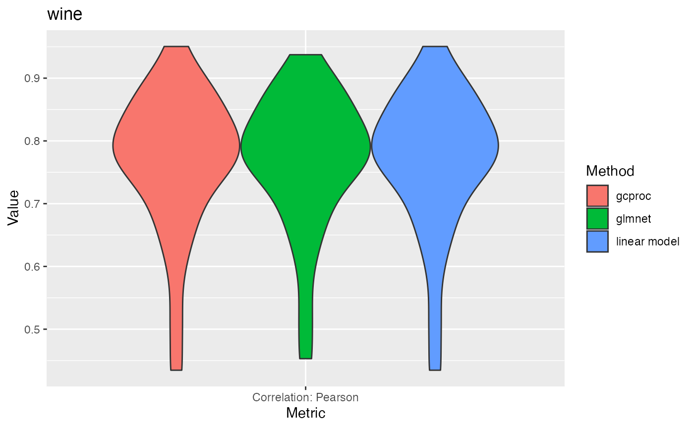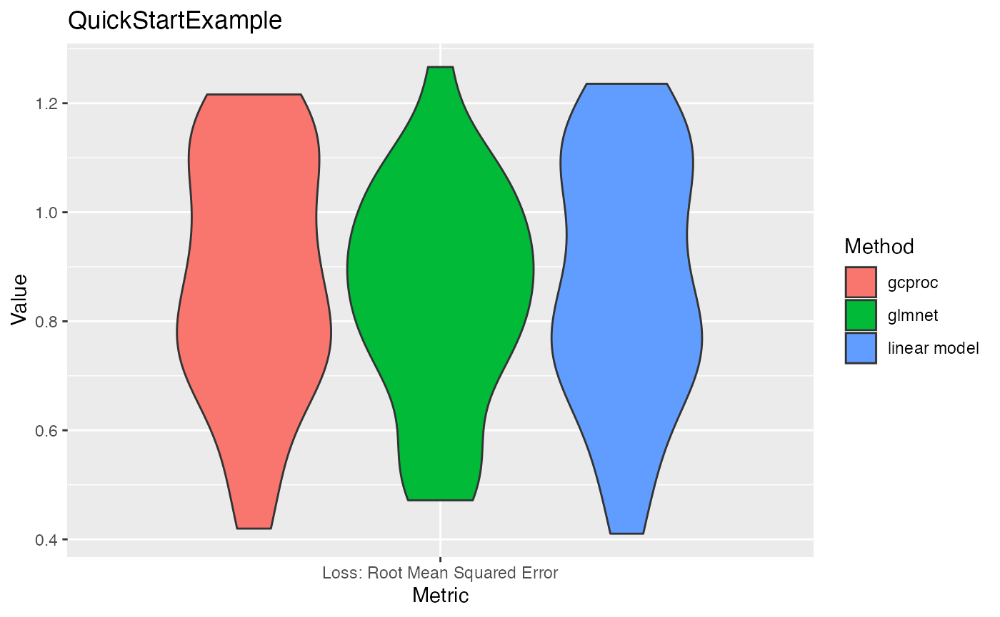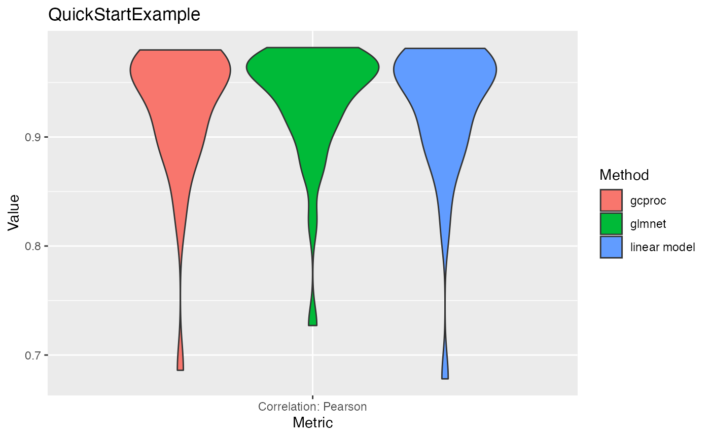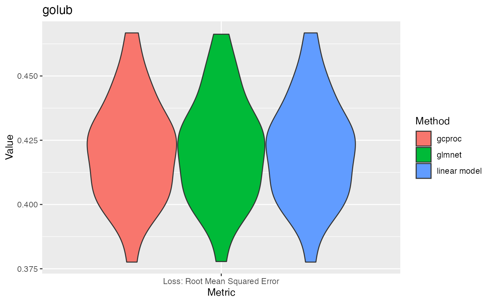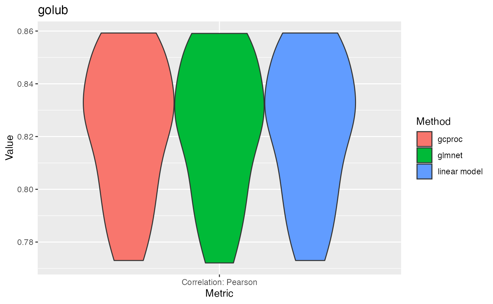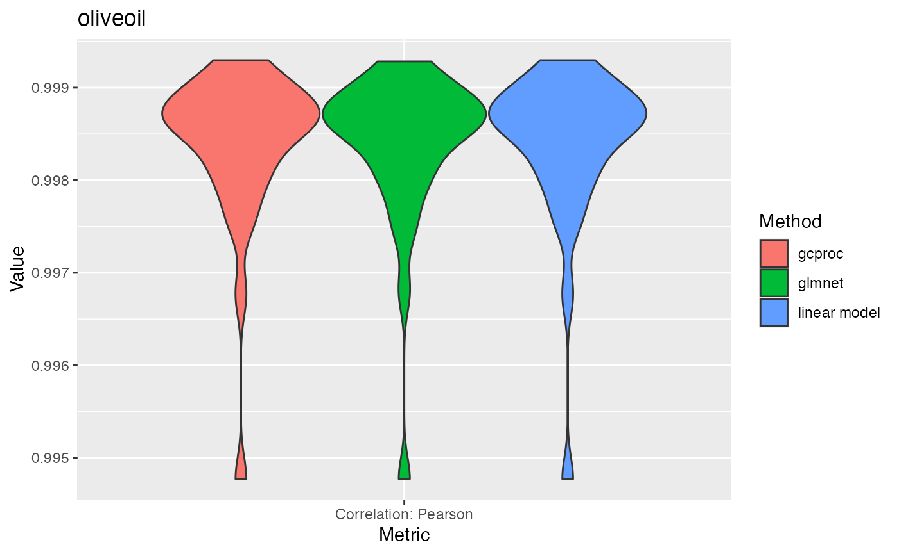
To induce missingness into the dataset, the default “missing at random” was induced via the ampute function via mice. This is in contrast to other types of missingness that can be [not at random], or [completely at random]. For gcproc, the missing data is initialized via the median value for the corresponding feature. The root mean squared error is reported, along with the pearson correlation.
for (list_id in c(1:length(predict.list))){
# Take dataset
data___x <- predict.list[[list_id]]
main_scores.2<-c()
for (seed in 1:10){
set.seed(seed)
# Run mice
data___x.check <- (as.matrix(as.data.frame(data___x)))
data___x.check <- mice::ampute(data = data___x.check,mech = "MAR")
data___x.check <- mice::mice(data___x.check$amp,printFlag = F)
mice.pred <- mice::complete(data___x.check)
# Set up recovery design matrix
recover <- gcproc::extract_recovery_framework(F)
recover.x <- (data___x.check$where)
# Initialise missing values given by recovery design matrix with median feature value
x.x.check <- as.matrix(data___x)
x.x.check <- x.x.check*(1-recover.x) + do.call('cbind',lapply(c(1:dim(x.x.check*(1-recover.x))[2]),function(X){(recover.x[,X])*median(x.x.check[which((1-recover.x)[,X]==1),X])}))
main_data <- list(x.x.check,x.x.check)
recover$design.list <- list(recover.x,recover.x)
recover$task <- c("regression")
recover$method <- c("knn")
join <- gcproc::extract_join_framework(F)
join$alpha <- c(1,1)
join$beta <- c(1,1)
# Run gcproc
gcproc.model <- gcproc::gcproc(main_data,
config = config.recover,
recover = recover
)
gcproc.recover <- gcproc.model$recover$predict.list[[1]]
# Extract imputed values
y_hat.plot <- gcproc.recover[which(recover.x==1,arr.ind = T)]
data___x.plot <- data___x[which((recover.x)==1,arr.ind = T)]
mice.pred.plot <- mice.pred[which((recover.x)==1,arr.ind = T)]
# Set up table for plotting
vals <- data.frame(rbind(data.frame(seed,Metric="Loss: Root Mean Squared Error",
data.frame(Method = c("gcproc","mice"),Value=c(
mean(sqrt((y_hat.plot-data___x.plot)^2)),mean(sqrt((mice.pred.plot-data___x.plot)^2))
))),
data.frame(seed,Metric="Correlation: Pearson", data.frame(Method=c("gcproc","mice"),Value=c(
cor(y_hat.plot,data___x.plot),cor(mice.pred.plot,data___x.plot)))
)
))
main_scores.2 <- rbind(main_scores.2,vals)
}
library(ggplot2)
a <- ggplot((main_scores.2[main_scores.2$Metric=="Loss: Root Mean Squared Error",]), aes(x=Metric, y=Value, fill=Method)) + geom_violin() + ggtitle(label = predict.names[list_id])
print(a)
library(ggplot2)
b <- ggplot((main_scores.2[main_scores.2$Metric=="Correlation: Pearson",]), aes(x=Metric, y=Value, fill=Method)) +
geom_violin() + ggtitle(label = predict.names[list_id])
print(b)
}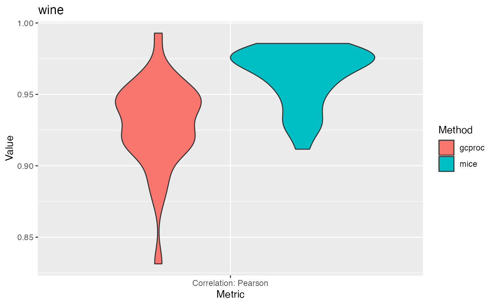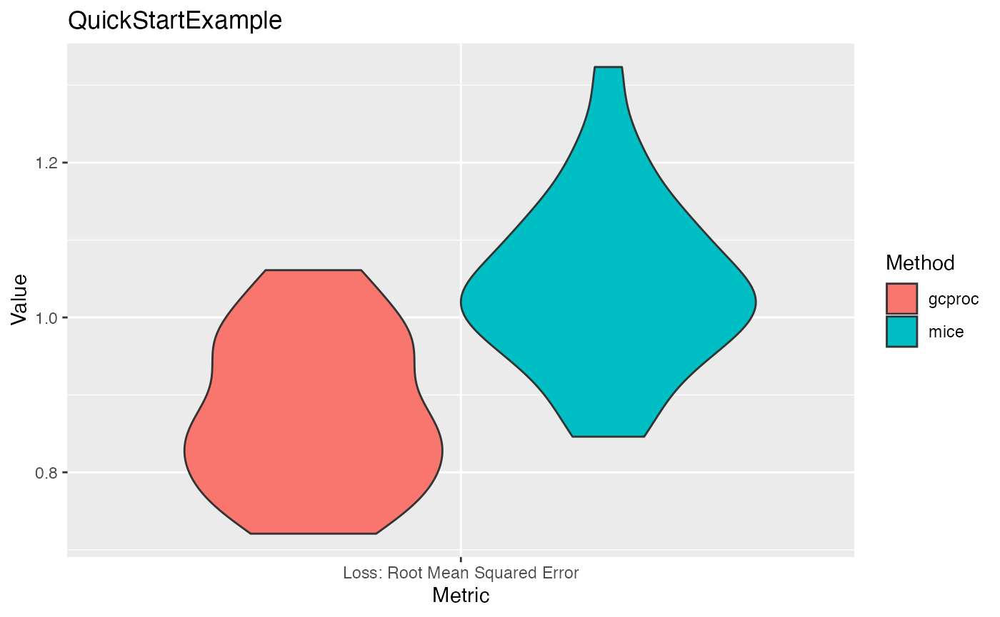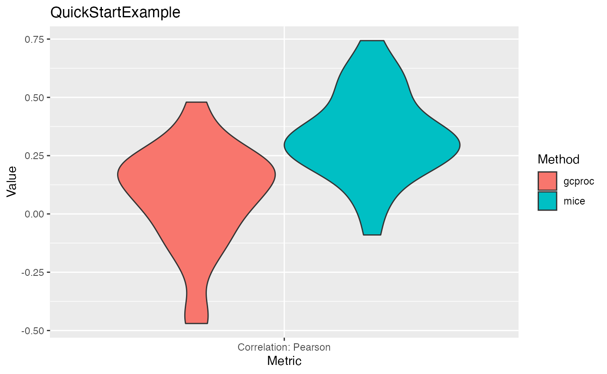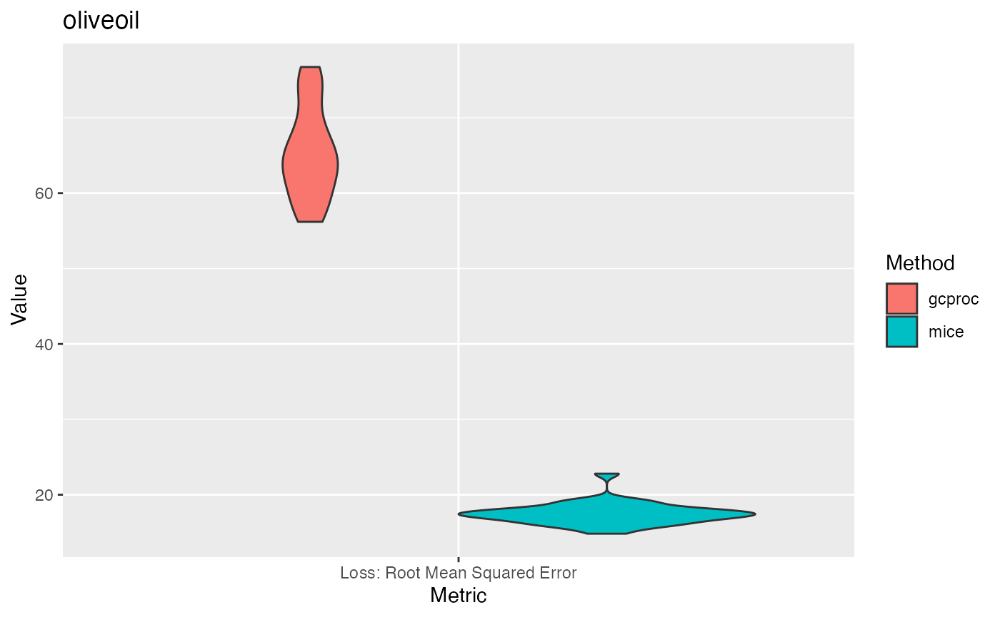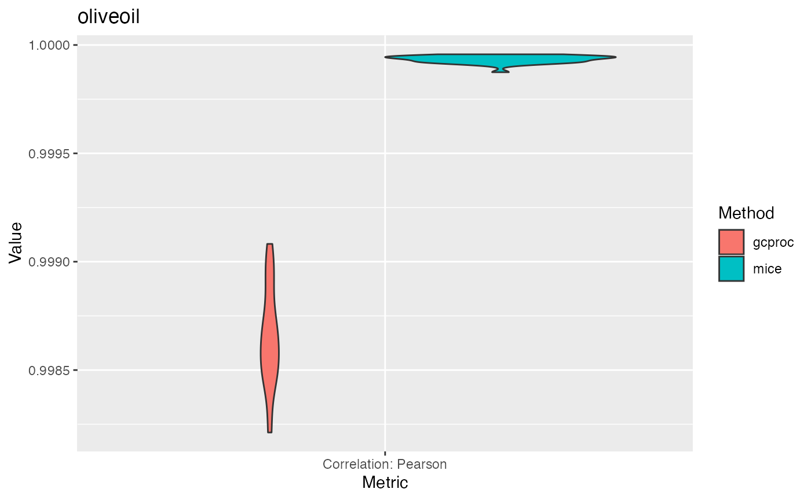